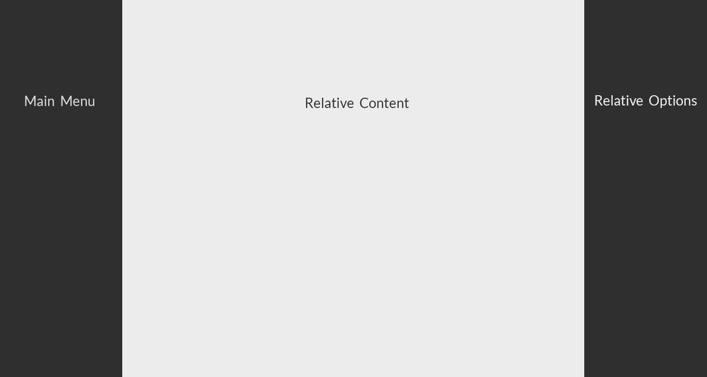
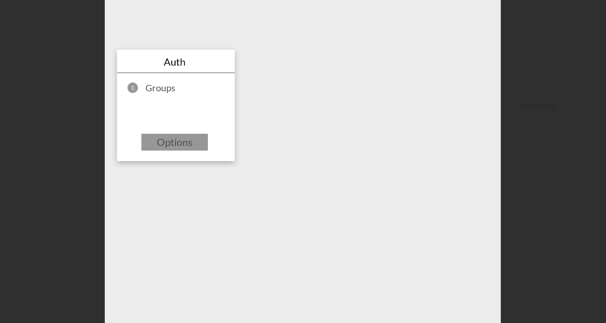
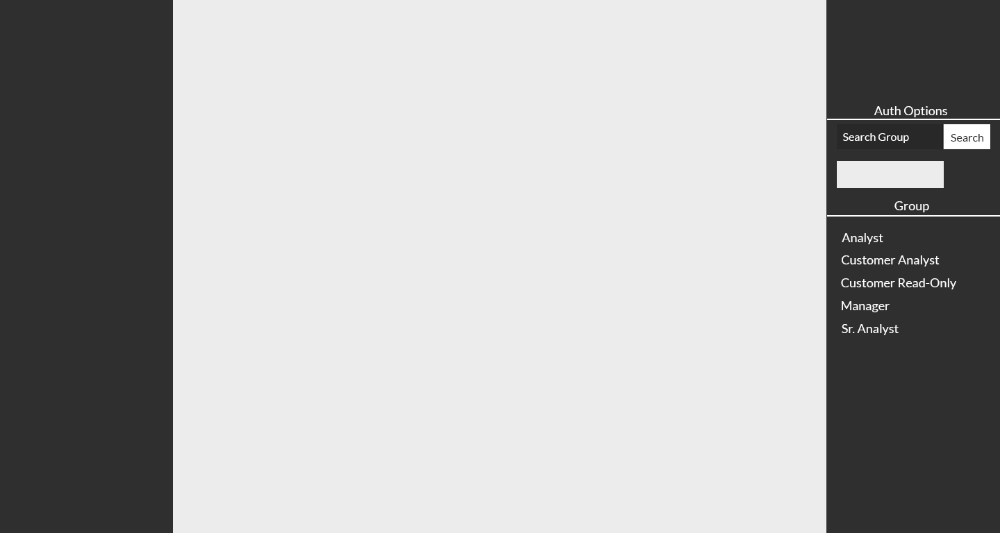
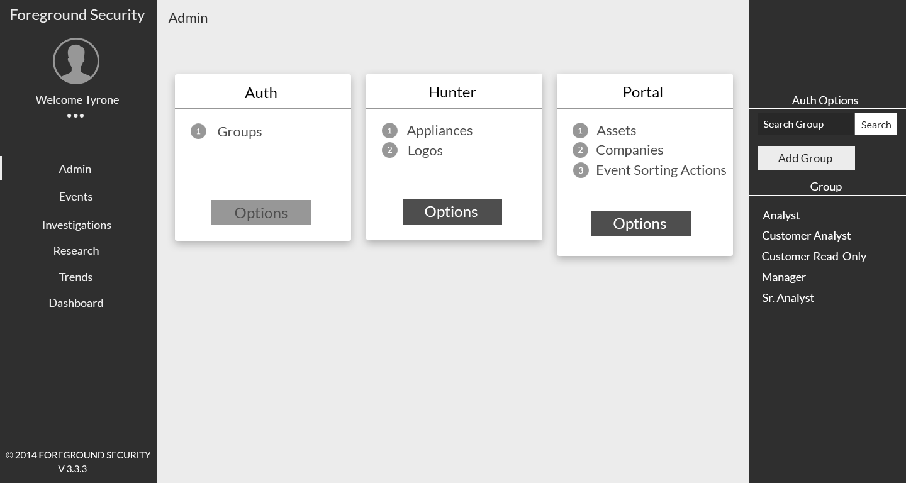

UI/UX Designs
Ideas for UI/UX Design
Tyrone Swinnie
Suggestive Tips For Redesign
3 Panel Design Layout
Card Based Grouping/Layout
Breadcrumb Navigation
3 Panel Design Layout
Content Grouped in 3 Key Panels

Main Panel
Hierarchy Data Display
Content Continuity
Provides a sense of intuitive design
Card Based Grouping/Layout
Organized Card Views
Menu Specific Related Content
Actionable Cards

Breadcrumb Navigation
Orientates User's Location
Intuitive Navigation
Main Menu Relative
Relative Options
Relative Options
Adds Sub Navigation Options
Intuitive Group Options

Design in mind for application
